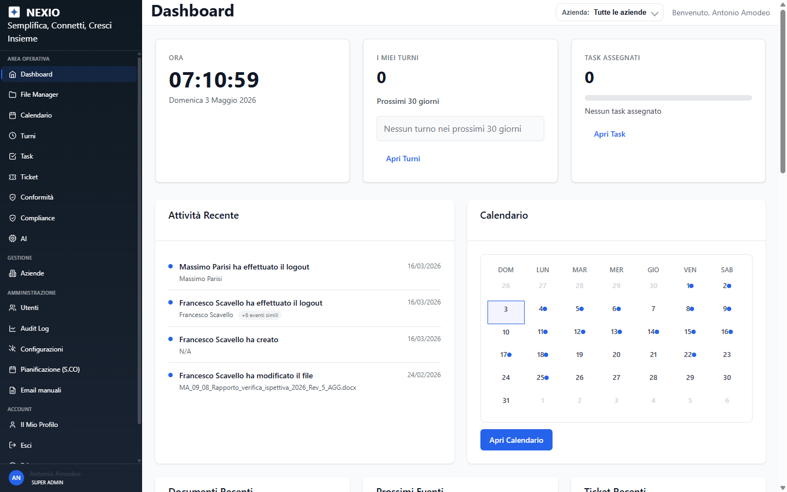
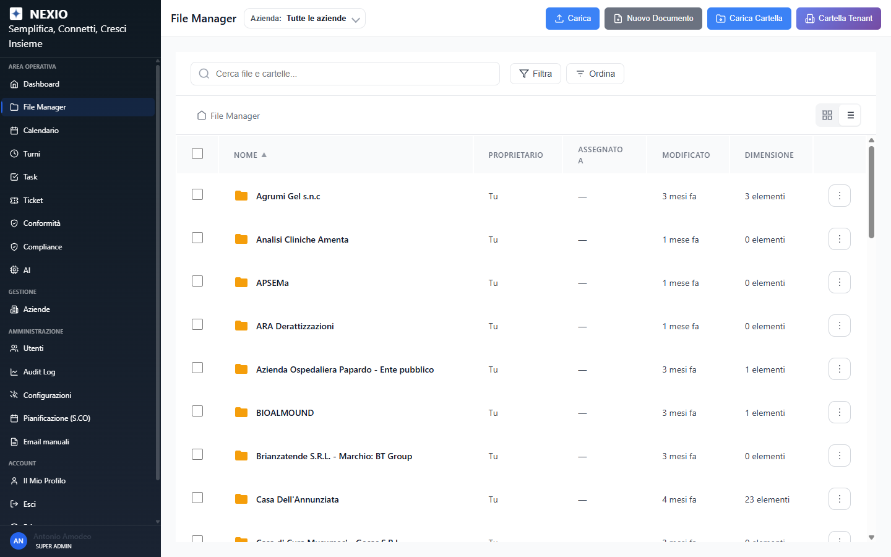
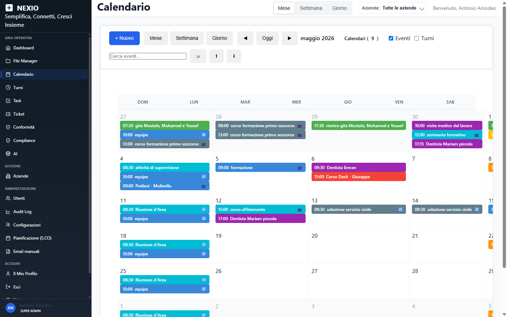
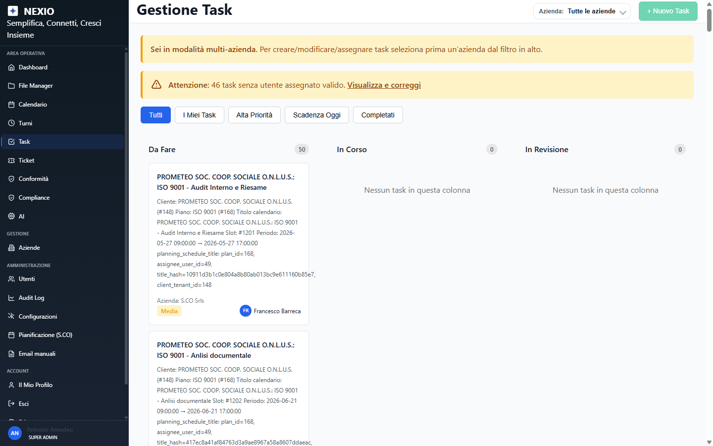
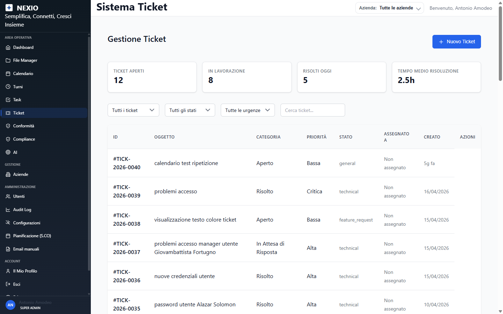
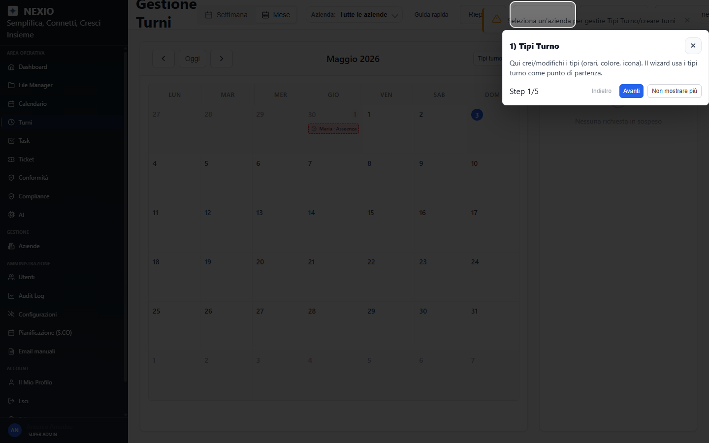
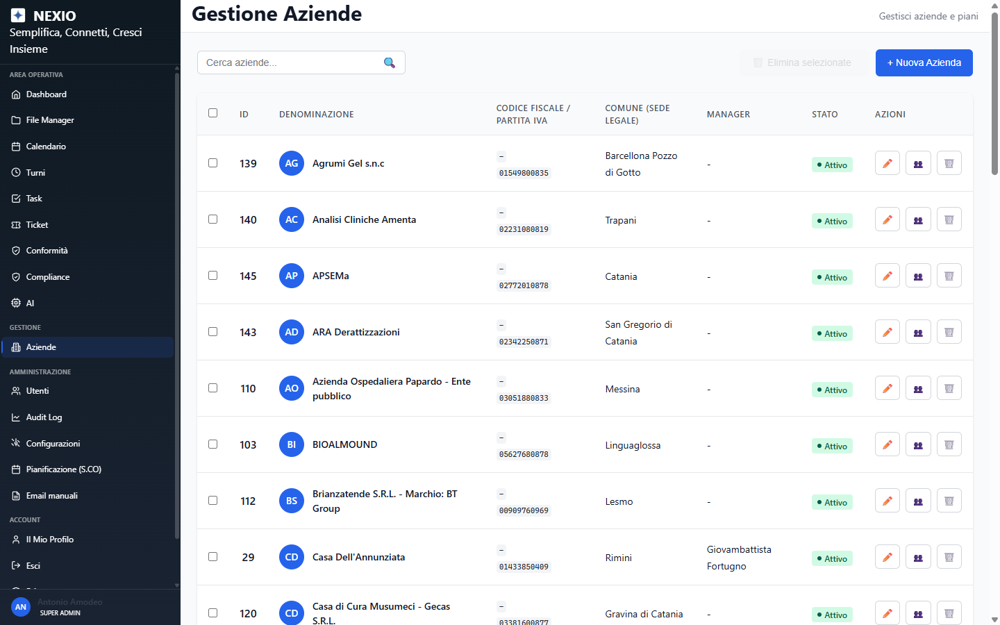
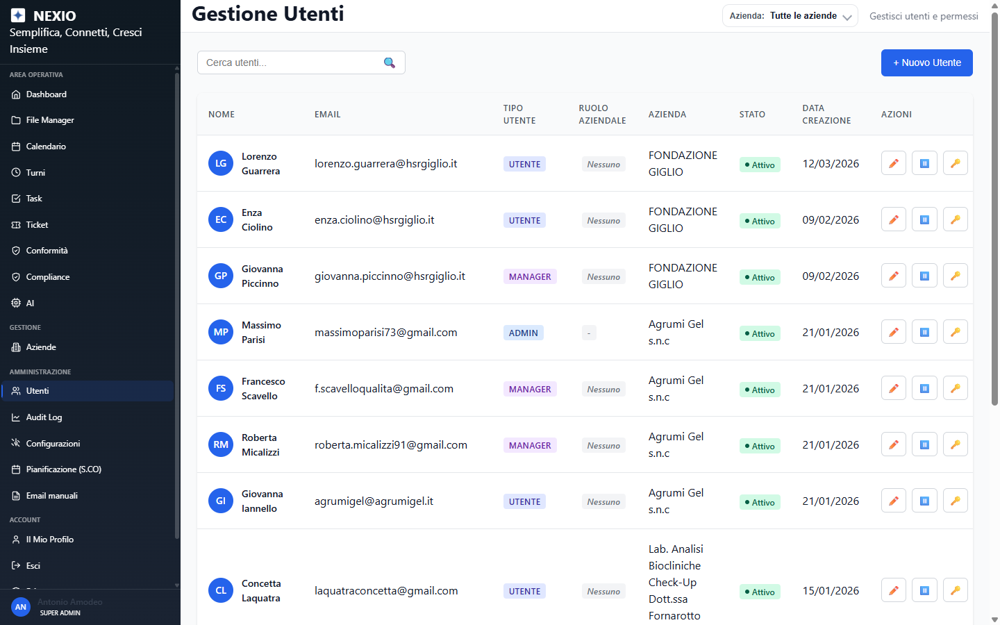
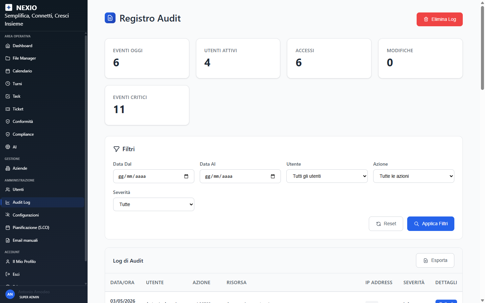
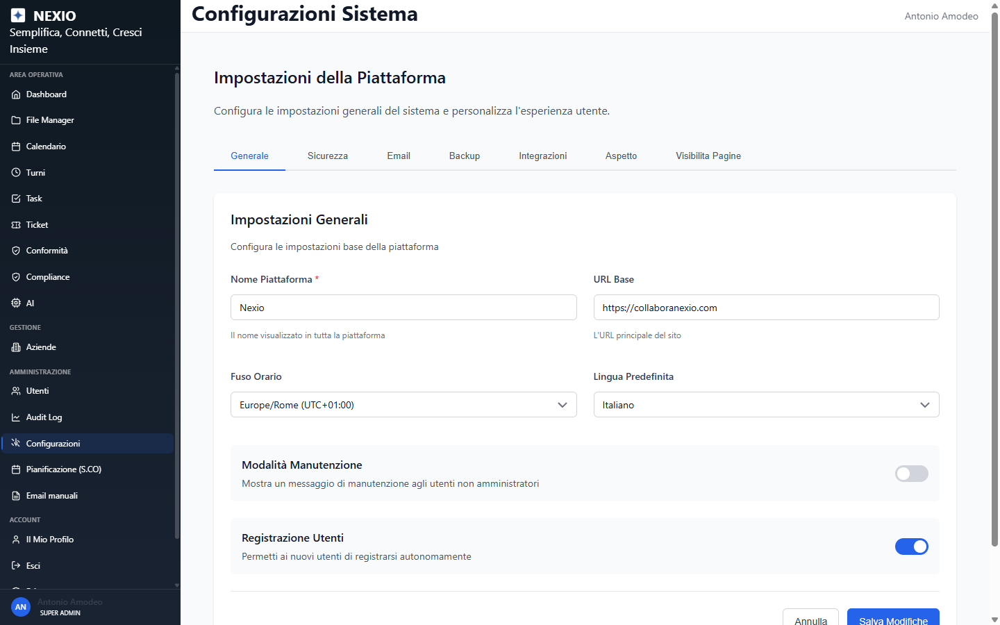

Pre-redesign snapshot · 2026-05-03 · branch ui/redesign-2026-05 · tag ui-baseline-2026-05-03 · viewport 1440×900 · captured by team-lead (recovery from zombi baseline-snapshot agent)
ui/redesign-2026-05
ui-baseline-2026-05-03









